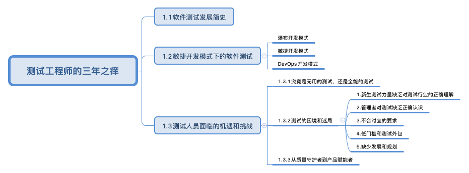

测试工程师的三年之痒¶

内容大纲¶

原文解读¶
测试的核心是测试策略，即测什么和怎么测。具体包括：测试的对象和范围是什么？测试的目标是什么？测试的重点和难点是什么？测试的深度和广度是什么？如何安排测试活动？如何评估测试的效果？
软件测试的发展经历了5个阶段，第1个阶段是证实：证明软件工作正确的活动；第2个阶段是证伪：发现错误而进行的活动；第3个阶段是缺陷预防：测试是以评价一个程序或者系统属性为目标的任何活动，测试是对软件质量的度量；第4个阶段是测试体系：测试成熟度模型、测试能力成熟度模型；第5个阶段是全生命周期测试：测试是为了度量和提高被测软件的质量，对测试软件进行工程设计、实施和维护的整个生命周期过程。
敏捷开发模式发布周期为月/周，要求自动化测试+探索测试，测试不再只是项目中后期的验证者，还需要前移至需求、开发环节和后移至运维、上线环节；DevOps开发模式发布周期为周/日，要求自动化流水线的持续测试，测试无所不在，一有缺陷立即发现。
质量不只是测试的事情，每个角色都要为自己那部分质量负责，每个开发人员都要有一定量的自测。对测试的专业性要求也随之变高，要能够与技术人员和业务人员展开良好协作，并理解利用测试记录需求和驱动开发的思想。测试记录需求，我的理解是测试人员编写测试用例和执行测试，梳理需求查漏补缺，推动产品完善需求文档；驱动开发，我的理解是测试人员发现缺陷，参与研发方案讨论，提出修改意见；专业的测试人员，也应具有优秀的技术能力，能够实现自动化测试，同时擅长探索式测试。了解用户在做什么，以更好地理解用户的软件需求。
测试的困境和迷局，体现在五个方面，一是新生测试力量缺乏对测试行业的正确理解；二是管理者对测试缺乏正确认识；三是不合时宜的要求；四是低门槛和测试外包；五是缺少发展和规划。很多人做测试三年左右就会遇到职业发展瓶颈。突破之法，在于从质量守护者转变为产品赋能者。
我们已经处于VUCA时代，即易变（Volatility）、不定（Uncertainty）、复杂（Complexity）和模糊（Ambiguity）的全新的商业格局。测试人员需要跳出传统思维，系统性思考，综合各领域的知识来解决问题，变得：专业、综合、适应变化。
参考资料：
《测试架构师修炼之道》第2版第1章测试工程师的“三年之痒”